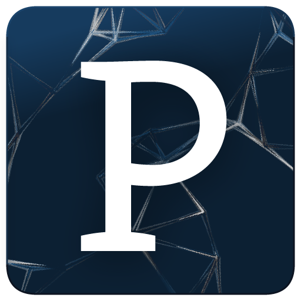
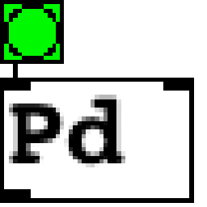
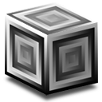
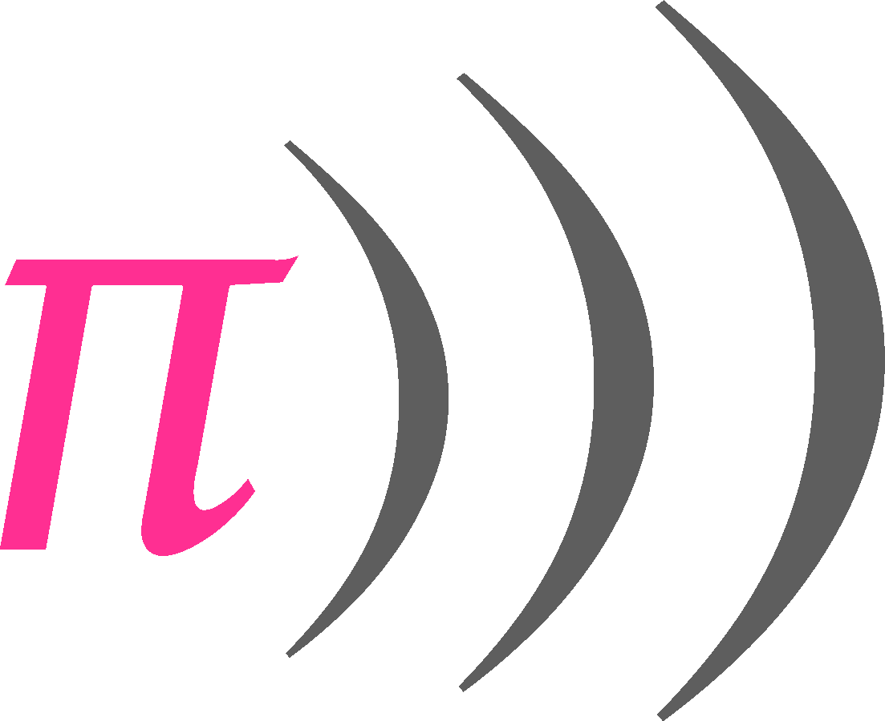
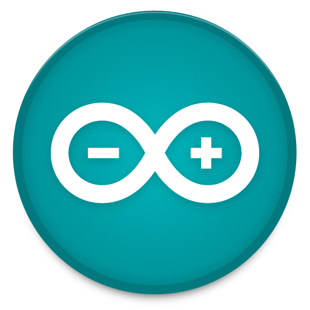
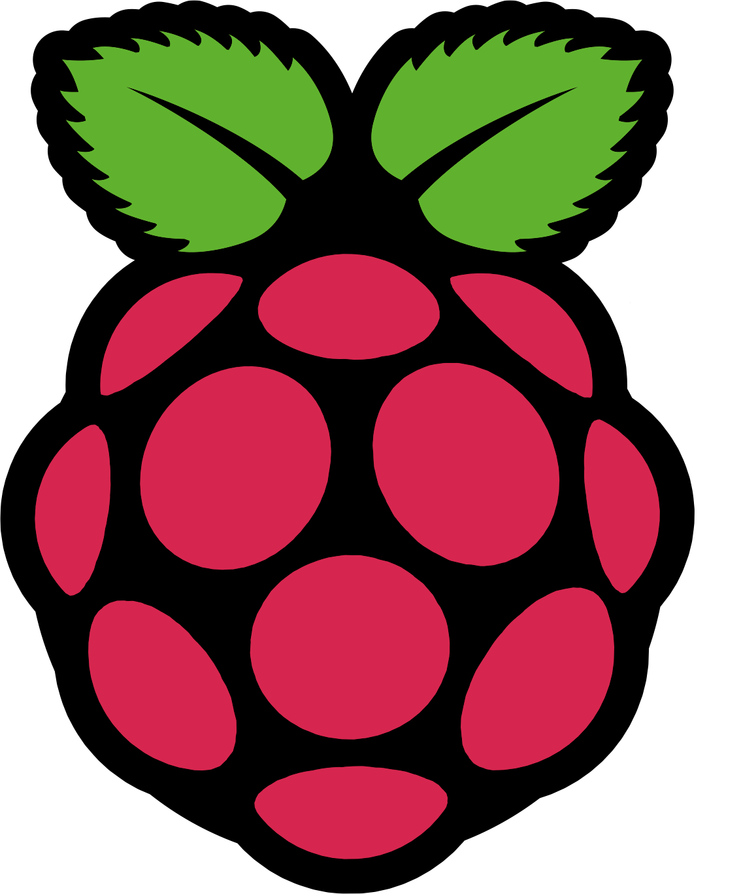

Linux Day Milano 2016
Strumenti Liberi per l’Interaction Design
Da sempre limulo.net sceglie il software libero e open source non solo come strumento d’uso quotidiano, ma anche (e soprattutto) come sistema operativo e ambiente di sviluppo per la realizzazione di video, musica, installazioni interattive e lavori di sound design.
Dall’interazione con oggetti alla creazione di visual in tempo reale, dalla sintesi audio alla computer vision, limulo.net, il 22 Ottobre 2016 porta al Linux Day alcune opere come esempi di lavori creati con tecnologia libera e aperta.
Osserveremo le tecnologie all’opera, discuteremo del loro funzionamento e dell’implementazione dei vari strumenti in quello che sarà un divertente momento di confronto e di scambio di idee.
Tools
Alcuni strumenti con cui sperimentiamo
Linguaggi di programmazione pensati per la grafica
|  | Processing: linguaggio di programmazione e ambiente di sviluppo multipiattaforma pensato originariamente per l’apprendimento della scrittura di codice nel contesto dell’arte visiva. Processing è uno strumento facile da imparare e molto versatile e permette di creare progetti articolati, capaci di elaborare immagini, video, suoni, dati, connessioni e molto altro. |
| openFrameworks: framework di librerie basato su C++. Uno strumento multipiattaforma che rende disponibili metodi e classi di tantissime librerie software come OpenGL, OpenCV, FMOD, ArtToolKit, Boost e molti altri. Analogo a Processing, è uno dei più noti strumenti per la realizzazione di applicazioni multimediali interattive. |
Linguaggi di programmazione pensati per il sonoro
|  | Pure Data: nato dal lavoro di Miller Puckette all’IRCAM di Parigi, si tratta di un linguaggio di programmazione così detto a nodi. Specializzato nella generazione e nella manipolazione del suono, permette la programmazione da semplici tool a moduli DSP complessi. Molto utilizzato nella realizzazione di audio e musica generativa e/o procedurale. |
|  | Supercollider: linguaggio di scripting per la programmazione audio, come Pure Data, è anch’esso un potente strumento per generare e manipolare il segnale audio. Il software è strutturato con architettura client/server, predisposto per l’utilizzo in molteplici configurazioni. |
|  | Sonic-Pi: strumento di live coding e di creazione di musica algoritmica per RaspberryPi e i principali sistemi operativi e distro GNU/Linux. Software leggero e poco dispendioso in termini di risorse computazionali. |
Microcontroller e schede per prototipazione
|  | Arduino: il microcontroller più conosciuto. Basato sulla filosofia Open Source, se connesso al proprio computer, permette di ampliare le sue funzionalità, rendendolo capace di captare stimoli e registrare dati provenienti dal mondo fisico. Grazie alle sue diverse versioni, si presta ad essere utilizzato come cuore per tantissimi progetti di Physical Computing. |
|  | RaspberryPi: in pratica un computer miniaturizzato e dal costo molto contenuto! Offre un’ampia scelta di sistemi operativi dedicati, tutti basati su distro GNU/Linux o altro software libero. Si tratta di un ottima soluzione dove sia necessaria più potenza di calcolo rispetto ad un Arduino pur mantenendo un’occupazione di spazio ridotta. Perfetto come strumento per imparare la programmazione, soprattutto grazie ai numerosi strumenti messi a disposizione dal sistema operativo. |